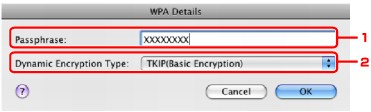

To change the wireless network settings of the printer, connect the printer and the computer with a USB cable temporarily. If you modify the wireless network settings of the computer over wireless connection without USB connection, your computer may not be able to communicate with the machine after modifying the settings.
The example screenshots in this section refer to the WPA detailed settings.
-
Start up IJ Network Tool.
-
Select the printer in Printers.
-
Click the Configuration button.
-
Click the Wireless LAN button.
-
Select Use WPA or Use WPA2 in Encryption Method and click Configuration.
-
Enter the passphrase, confirm the type of dynamic encryption and click OK.
-
Passphrase
Enter the passphrase set to the access point. The passphrase should be a string of 8 to 63 alphanumeric characters or a 64-digit hexadecimal value.
If you do not know the access point passphrase, refer to the manual provided with the access point or contact its manufacturer.
-
Dynamic Encryption Type
Select the dynamic encryption method from either TKIP (Basic Encryption), or AES (Secure Encryption).
 Important
Important-
If the printer cannot communicate with the computer after the encryption type of the printer was switched, make sure that encryption types for the computer and the access point matches that set to the printer.
 How to Set a WEP/WPA/WPA2 Key
How to Set a WEP/WPA/WPA2 Key
 Note
Note-
This machine supports WPA-PSK (WPA-Personal) and WPA2-PSK (WPA2-Personal).
-